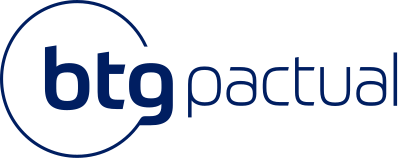

Seleção em escala, rampa e prontidão da rede Digital.
Acesso da demonstração: identificação por email, sem senha.
Contratação de assessores de entrada em escala, rampa acelerada e prontidão consultiva da rede BTG Advisors, com evidência auditável e revisão humana.
Volume de contratação com padrão: selecionar em escala, acelerar a rampa e liberar com evidência.
Triagem por IA em escala: link público por vaga, sem gargalo de agenda.
Onboarding em produtos, suitability e sistemas.
Prontidão técnica contínua e credenciais.
Simulação de atendimento, sob revisão humana.
1 regional ou 2 escritórios, 30 a 50 profissionais e as vagas de entrada abertas no período.
60 a 90 dias, do link da vaga à rampa: seleção, suitability e produtos.
Candidatos triados por vaga, tempo até a shortlist e evolução de prontidão.
Portal do assessor e painel da liderança.
*Exemplo ilustrativo. Premissas a calibrar com os dados do piloto.
A espinha da plataforma: 4 trilhas de desenvolvimento que levam o profissional do dia 1 da contratação ao atendimento de carteira complexa, elevando o Índice de Prontidão Consultiva. Formação, Assessor, Pleno e Sênior - cada etapa abre um modo real: Estudo (a IA avalia respostas abertas), Múltipla escolha ou Atendimento Consultivo.
O profissional responde em texto (ou voz, em produção) e a IA avalia o conteúdo - o que cobriu, o que faltou, sinais de alerta - e mostra o gabarito comentado, como insumo sob revisão humana. É o mesmo motor de avaliação por IA da plataforma. Experimente abaixo.
Demonstração: a IA avalia a resposta aberta por cobertura dos critérios e pontos de atenção, e mostra o que foi coberto, o que faltou e o gabarito comentado. Cada sessão concluída eleva o seu Índice de Prontidão Consultiva e vira evidência no dossiê que o seu líder vê.
Casos reais de atendimento consultivo, em várias etapas. Você lê o perfil do cliente e o contexto, responde cada etapa com suas palavras e a IA avalia o conteúdo - o que cobriu, o que faltou, sinais de alerta - com gabarito comentado em cada passo. É o mesmo motor de avaliação por IA da plataforma, aplicado a um caso completo. Escolha um caso abaixo.
Demonstração: a IA avalia cada etapa por cobertura dos critérios e pontos de atenção, e mostra o que foi coberto, o que faltou e o gabarito comentado. O desempenho no caso alimenta o seu Índice de Prontidão Consultiva e o dossiê que o seu líder acompanha.
Antes de gastar hora de gente sênior, a IA aplica um screen técnico padronizado e gera um Índice de Prontidão Consultiva comparável, com critério padronizado e auditável: todos respondem ao mesmo screen. O ranking é insumo de triagem; a decisão de contratação é sempre humana, e a IA não aprova nem reprova candidatos.
| Candidato | Índice de Prontidão | Sinais | Status |
|---|
Ranking gerado por screen técnico padronizado (mesmo conjunto de critérios para todos). Reduz viés e hora de entrevista - a liderança entra só no topo da fila.
*Exemplo ilustrativo (premissa a calibrar no piloto).
Trilha estruturada que leva o profissional recém-chegado do dia 1 à produtividade mais rápido - produtos BTG Pactual, suitability, sistemas e atendimento - com progresso medido por pessoa.
Dias até o profissional atingir o patamar de produtividade-alvo.
*Exemplo ilustrativo. O piloto serve para medir os números reais.
Banco de questões para as certificações do mercado, do CPA-10 ao CGA, já mapeando a transição ANBIMA 2026 (nova CPA e C-Pro), e produtos BTG Pactual, com avaliação imediata e gabarito comentado. Cada resposta atualiza a prontidão da pessoa para a prova, a mesma leitura que alimenta a Projeção de certificação no painel do gestor. Experimente: escolha uma certificação e responda.
Demonstração com questões-amostra. Em produção, o mesmo motor de IA avalia respostas abertas e gera gabarito comentado; o banco é calibrado com o conteúdo oficial das certificações.
Atenda um cliente simulado por IA, em vídeo e voz. Ao final, você recebe uma análise comportamental do atendimento, insumo de coaching, nunca usada isoladamente para promoção, desligamento ou alocação de carteira.
"Meu filho vive insistindo pra eu colocar tudo em bitcoin. Eu não entendo nada disso e tenho medo de fazer besteira com o dinheiro que juntei a vida toda."
"O Ibovespa caiu 9% hoje, estou vendo minha carteira derreter. Quero resgatar tudo agora, antes que piore. Vende tudo, por favor!"
A conversa acontece por vídeo e voz, com permissão do navegador. A análise comportamental é gerada ao final como insumo de coaching, alimenta a dimensão Atendimento do seu Índice de Prontidão Consultiva e aparece como evidência no painel do seu líder, sempre com revisão humana.
Pergunte sobre ANCORD, CPA-20, CEA, CFP, CGA e CNPI, produtos de investimento, suitability e conceitos do mercado. O tutor é didático e educacional - explica o conceito, não dá recomendação de investimento personalizada.
O tutor tem foco estritamente educacional e não substitui orientação de investimento personalizada. Sem o motor de IA conectado, o tutor responde com conteúdo de exemplo.
O candidato conversa em vídeo e em tempo real com um entrevistador virtual do BTG Pactual: cinco perguntas adaptadas à vaga e às respostas, como numa entrevista real. Ao final, a IA gera a análise comportamental da conversa, que alimenta a triagem do gestor. As análises são insumos de coaching e triagem; não substituem validação humana.
A câmera e o microfone exigem permissão do navegador. O resultado da triagem não é comunicado ao candidato durante a conversa; a equipe do BTG Pactual entra em contato com os próximos passos. A análise comportamental alimenta a aba de Seleção do gestor.
Treine no formato da prova real: questões de múltipla escolha com tempo cronometrado e sem gabarito durante a prova. No fim, você recebe a nota, o status de aprovação e a revisão comentada de cada questão. Para o assessor de entrada, certificar mais cedo é atender clientes mais cedo.
O ritmo por questão e a nota de corte seguem a banca oficial de cada certificação; o bloco usa o banco de questões da plataforma, expandido no piloto para o tamanho da prova real.
Gravações e scorecards das simulações, as mesmas evidências que aparecem no seu dossiê no painel do líder. Clique para reabrir o vídeo e a avaliação por IA.
O que a sua rede exige de você hoje: contratação, risco, retenção, certificação e promoção, com o impacto em carteira. Tudo consolidado automaticamente do que cada profissional faz no portal, com evidência auditável e revisão humana.
Quem promover, certificar, reter e liberar para atender. Decisão de gente com lastro de dado, não achismo: cada indicador vem das avaliações do portal do profissional, e o dossiê de cada nome mostra as evidências.
Feita para o volume de contratação de assessor de entrada do B2C: link público por vaga, triagem por IA em escala e shortlist com evidência para a decisão do RH.
A entrevista por IA entra como uma etapa do processo no Greenhouse, o ATS do BTG: ao mover o candidato de etapa, o convite sai sozinho, a IA entrevista em vídeo e a nota volta para o scorecard do recrutador. Mesmo padrão dos parceiros de assessment já homologados (Criteria, HackerRank).
Interface do Greenhouse simulada para fins de demonstração. O link de candidatura, a entrevista por IA e a avaliação são reais (mesmo motor da aba Seleção). Em produção, a conexão usa a Assessment Partner API oficial do Greenhouse: o recrutador dispara e recebe tudo sem sair do ATS.
Sinais antecipados de risco consultivo e suitability, derivados das avaliações e simulações do portal do profissional (não do monitoramento de operações reais de clientes). Vigilância não-compensatória (um vetor crítico, como suitability, escala o caso mesmo com média geral boa), gatilhos auditáveis e ação preventiva, antes de o sinal virar caso de compliance.
Ranking da rede e benchmark de mercado: onde agir primeiro. A prontidão de cada escritório é a média dos Índices de Prontidão dos seus profissionais, consolidados do portal.
Pontos de prontidão destravados, sinais de alerta evitados e rampa consultiva reduzida. A estimativa financeira abaixo é potencial, com premissas a calibrar no piloto.
Trilha auditável, recertificações, rubricas versionadas, permissões por papel e integrações enterprise.